My personal portfolio, rebuilt around one idea: show the process, not just the result. Designed as wireframes and high-fidelity screens, then built with plain HTML, CSS and JavaScript.
Role
Designer and developer (solo)
Type
Personal project
Tools
HTML, CSS, JavaScript, GitHub Pages
Focus
UX, accessibility, SEO
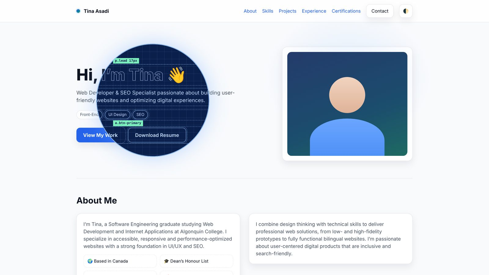
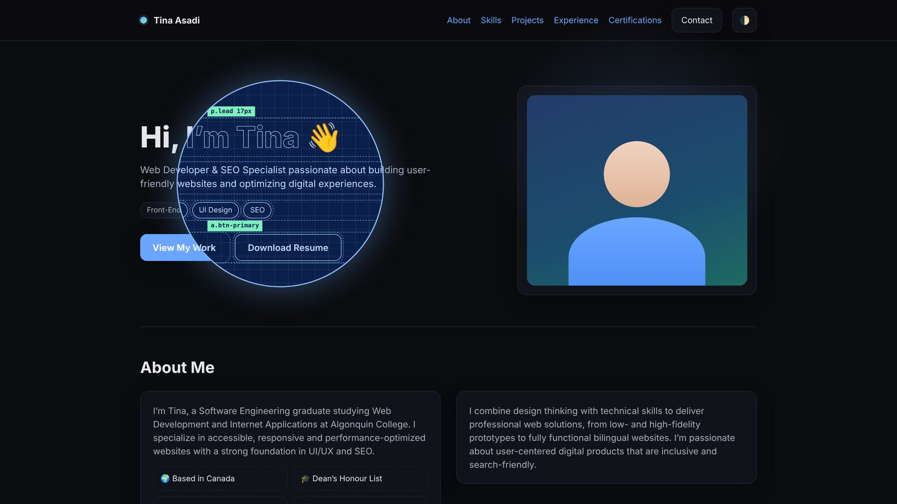
01
The plan
My portfolio is the first project anyone sees, so it has to prove what I claim: that I can design, build and optimize a website. Version 1 worked, but it felt like a template, and when I audited it I found real problems.
I set three goals for version 2: make it genuinely usable on every screen size, make it search- and accessibility-friendly, and give every project room to tell its story. Here is what the audit found:
Several project cards linked to "#", so they went nowhere, and clicking them caused a JavaScript error.
The mobile menu was hard-coded white, so it stayed light even in dark mode.
Projects were split into categories, each in its own horizontal scroller, so visitors had to scroll sideways to find work. With only web projects left, they now sit in one grid.
The page had no meta description, social preview or structured data, and a stylesheet link pointed to a file that did not exist.
Card hover effects were clipped inside the scrolling rows, and the layout had no clear tablet breakpoint.
1. AuditList what is broken or weak in version 1
2. DefineSet goals and decide what the site must prove
3. WireframeSketch the structure for desktop and mobile
4. DesignHigh-fidelity screens in dark and light themes
5. BuildPlain HTML, CSS and JavaScript
6. TestReal devices, keyboard only, accessibility and SEO checks
02
The idea
My skills sit between design and code, so I wanted visitors to feel that handoff instead of reading about it. Every idea below came from that one question: how can the site itself be evidence?
Show the process
A "blueprint lens" follows the cursor over the hero and reveals the wireframe underneath. On touch screens a button does the same.
Let skills prove themselves
Tapping a skill highlights the projects that used it, so claims are linked to work.
Tell the story
Each project opens a case study that walks from plan to result, like this page.
Everything in view
All projects sit in one grid that stacks into a single column on phones, so nothing is hidden behind a scroller or a tab.
Accessible by default
Real buttons, visible focus, large tap targets, reduced-motion support and a menu that follows the theme.
Search-friendly foundations
Semantic structure, a clean heading order, meta tags and structured data from the start.
03
Low fidelity
I started in grayscale on purpose. With no color, type or imagery to hide behind, I could only judge structure: what comes first, how much each section needs, and where the eye goes.
On desktop I kept one clear grid: a sticky header, a hero with the message on the left and a portrait on the right, then sections of cards. On mobile everything collapses to a single column, the menu moves behind a hamburger, and projects stack into a single column. The numbered notes mark the decisions I wanted to defend.
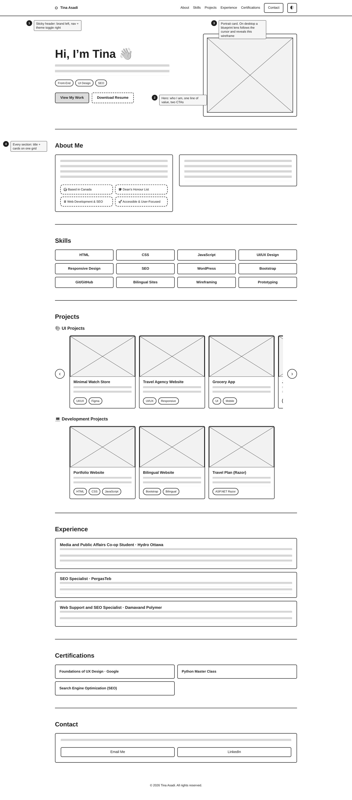
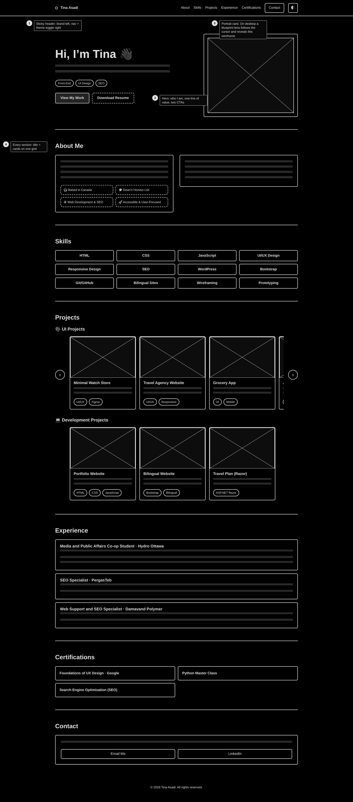
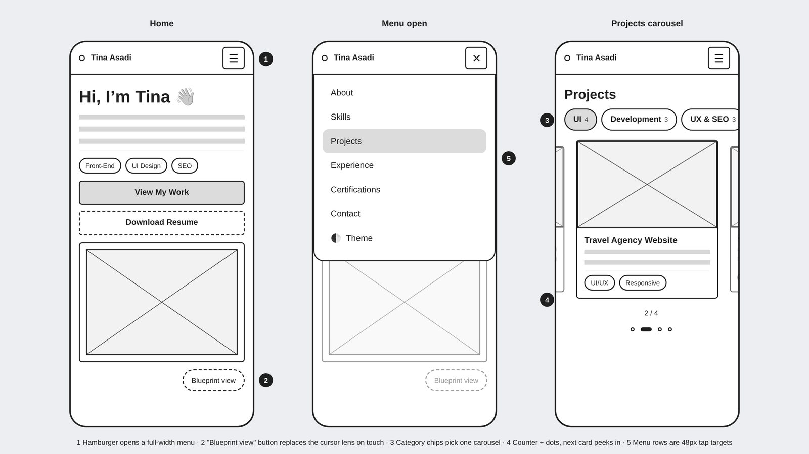
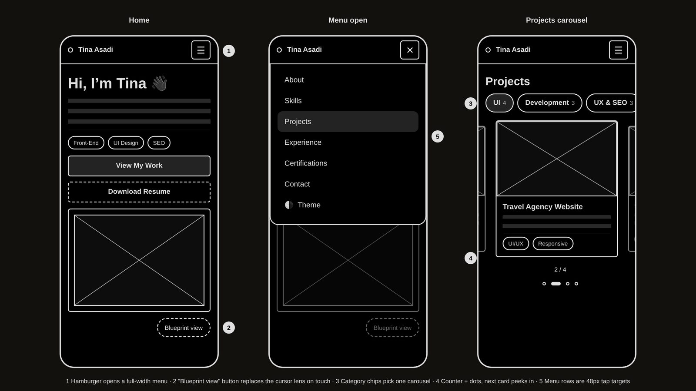
04
Low to high fidelity
Moving to high fidelity meant turning structure into feeling. I defined color tokens first (a dark and a light theme from the same variables), then type hierarchy, spacing and depth. A single mint accent marks anything interactive or active, so the page stays calm and the important things stand out.
Drag the slider to compare the wireframe with the finished design. The layout barely moved, which was the point: the wireframe made the structural decisions, and fidelity only added polish. The mobile screens below show the same idea on a phone.
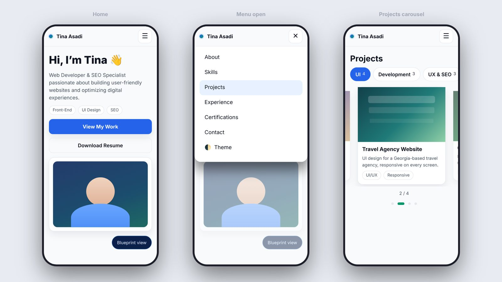
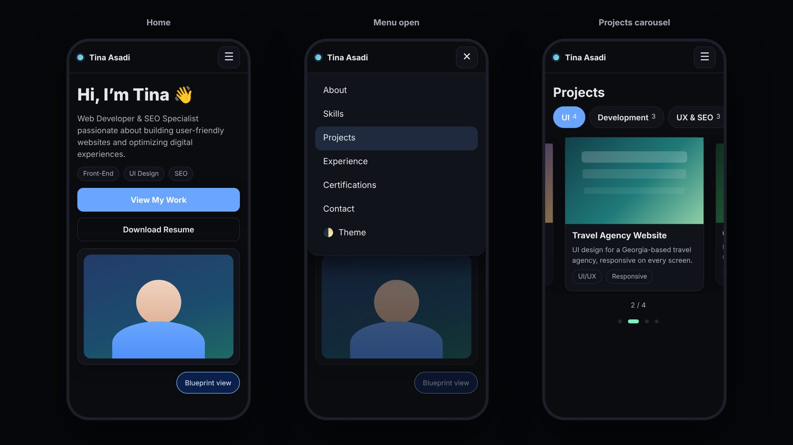
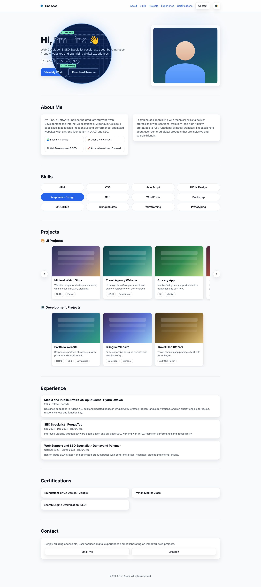
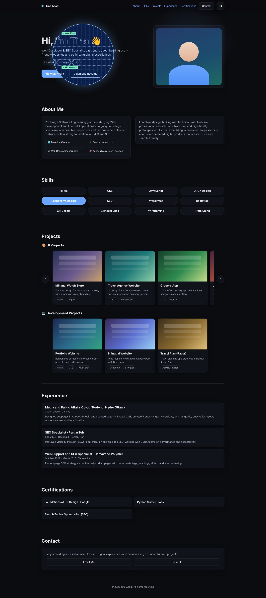
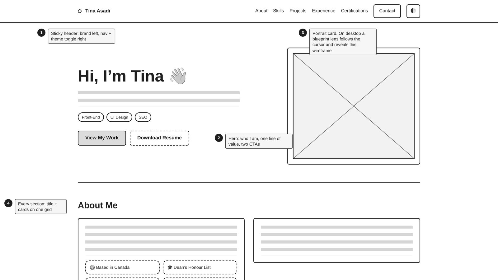
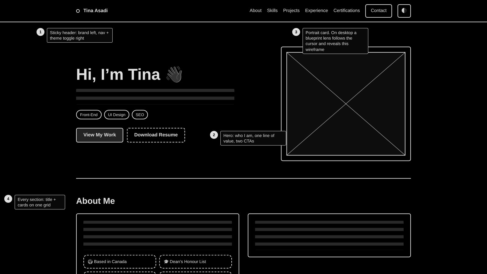
WireframeFinal design
Drag the handle, or use the arrow keys.
05
Building it
I built the site with plain HTML, CSS and JavaScript and no frameworks, so it stays fast and easy to maintain. These are the parts I am proudest of, and the bugs I found along the way.
Design tokens
Every color and shadow is a CSS variable. The dark and light themes just swap them, and the saved theme is applied before the first paint so the page never flashes.
Blueprint lens
At runtime the hero is cloned into a wireframe layer and revealed through a circle. The cursor only drives it with a mouse, and respects reduced motion.
Skill filter
Skills map to the tags on each project. On desktop non-matching cards dim; on phones they leave the grid.
Themed project covers
Each project card holds a light and a dark cover image, and CSS shows the one that matches the chosen theme.
Case viewer
A project image morphs into the case study using the View Transitions API, with a plain fallback in other browsers.
Bugs found and fixed
The "#" links error, the always-white mobile menu, clipped hover effects and the missing stylesheet are all fixed in version 2.
06
The prototype
I did not build a separate clickable mockup. Because the site is plain HTML, the working site is the prototype. Launch it below, then resize the window or open it on your phone to see the layout adapt.
Version 2 is live. It keeps all of my content, but it is easier to move around, works on every screen size, and gives each project a place to tell its story.
6Projects presented
12Skills you can tap to filter
2Themes from one set of tokens
0Frameworks or libraries
Wireframing first would have caught the scrolling-categories problem and the menu problem before any code existed. Next time the design comes before the build.
Small details carry the experience: tap-target size, focus rings, and a menu that respects the theme.
Progressive enhancement keeps fancy features from becoming failure points. The lens, the viewer and the filter are extras, and the site works without them.
Next: give every project its own case study, measure speed, accessibility and SEO with Lighthouse, and generate one static page per case study so search engines can read each one.